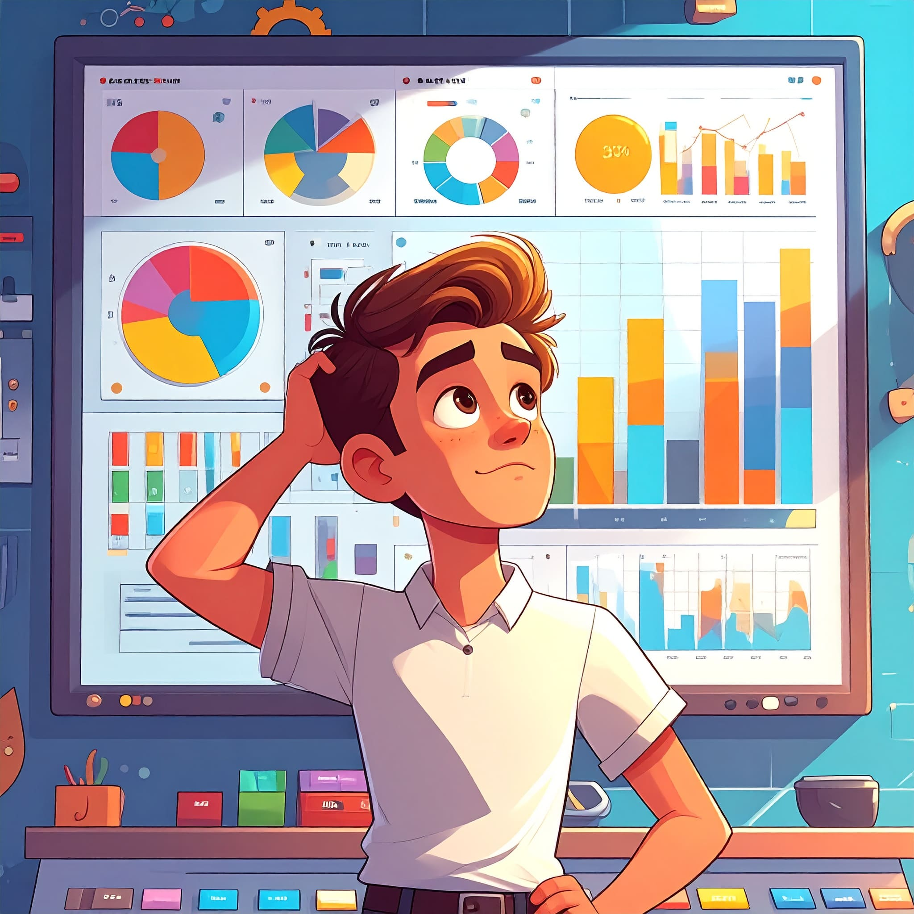
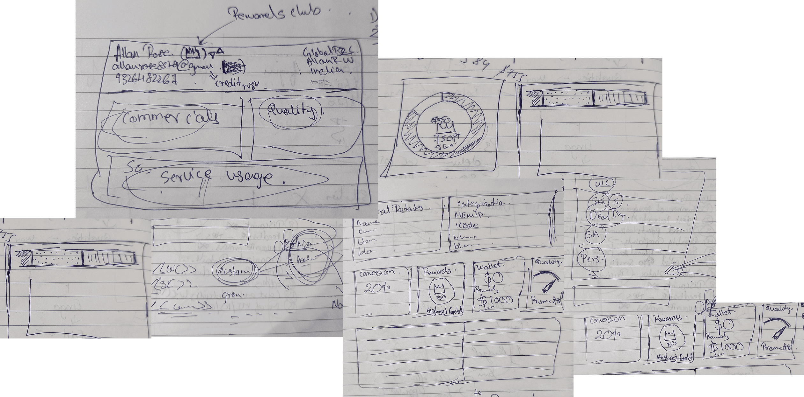
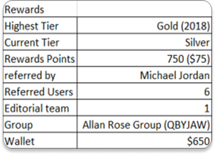
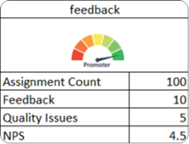
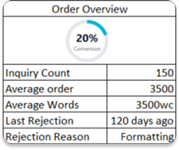
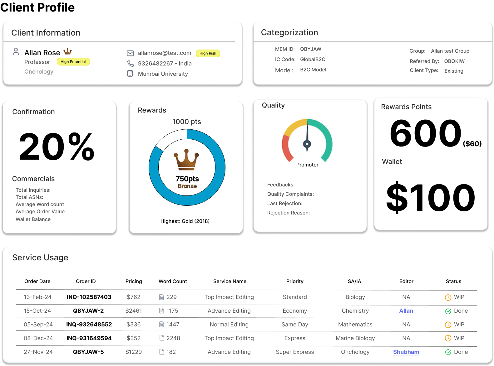
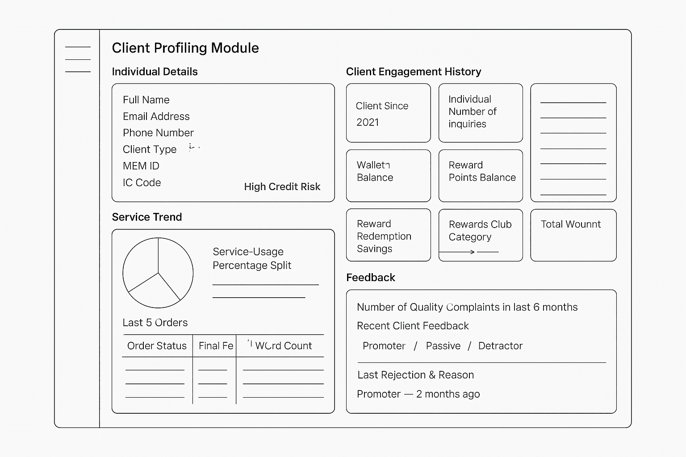
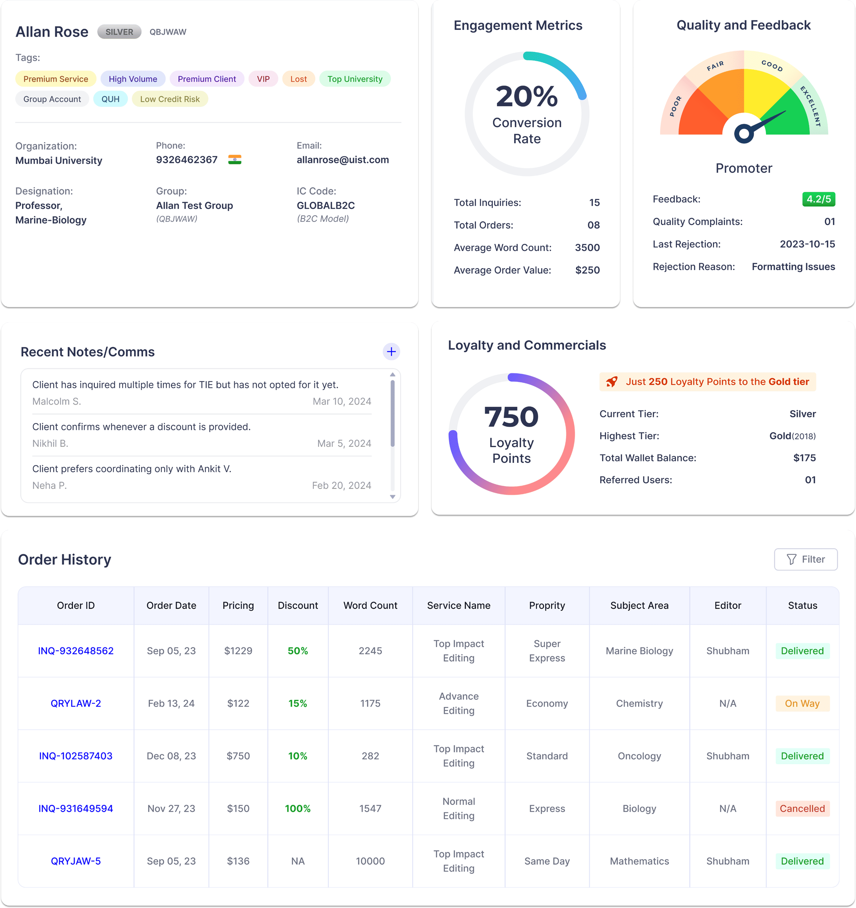

0 → 1 · Case Study
Client Profiling: client history at your fingertips

The problem we couldn't ignore
Conversion rates from inquiry to confirmation were dropping steadily — and across geographies. At first it looked like a market blip. Then the real picture showed up: we weren't losing leads. We were leaking them.
The investigation
We pulled data from CRM logs, listened in on CS calls, and sat down with CS reps. Every agent was going in blind — no memory of the client's earlier interactions, preferred services, or follow-up history. Every call felt like starting over. In a world of impatient users, that was costing us.
- "I called, but I didn't know what they wanted."
- "She sounded annoyed, like I should've known she asked for Academic Editing last week."
- "They keep asking — don't you already have my info?"
The core insight
Our CS team was working hard, but they lacked the information to make the relationship feel continuous. Without visibility into past interactions, they couldn't signal that we valued the client. The gap created a jarring experience for customers who expected continuity and instead ran into what felt like amnesia on every call.
We don't need more outreach — we need smarter outreach.
Solution: from conversion drop to context engine
Goal: boost lead conversion by giving the CS team everything they need to personalise interactions — on a single screen.
- Enable tailored conversations across the full user journey
- Power more effective upselling and cross-selling
- Increase retention and satisfaction through genuine personalisation
- Cut the back-and-forth and the frustration of cold outreach

How we built it — from sheets to system
We built a lightweight internal tool that became the team's command centre. Focus areas:
- A clean, scrollable view per lead
- All info in one place: service requested, location, form data
- Outcome tagging on every contact
- Optional notes for edge cases (language barrier, urgency, etc.) — later used as data to make the tool smarter
Raw idea
Before we had a design, we had a list. We started with a basic Excel sheet to centralise user data — just enough to test whether consolidating context actually made CS work easier.



Lo-fi wireframe
Once we validated the need, we mocked a layout in Figma focused purely on data groupings.


Finalised version
With clearer requirements and layout, we polished the UI and added structural components — tabs, headers, icons. This version went to leadership and was approved for development.

Final thought
This dashboard began as a simple Excel sheet triggered by one insight. By layering context into a single screen, we turned guesswork into confident, personalised conversations — and improved conversions in the process.
Great internal tools don't just save time — they sharpen human judgement.